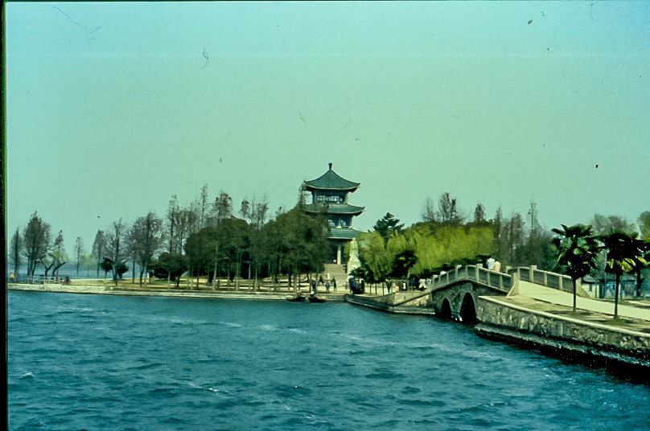
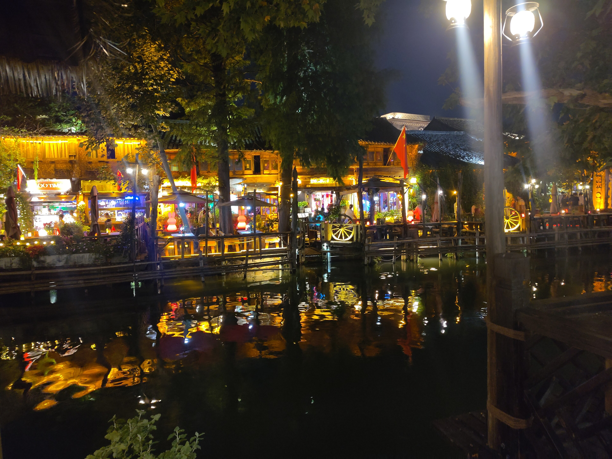
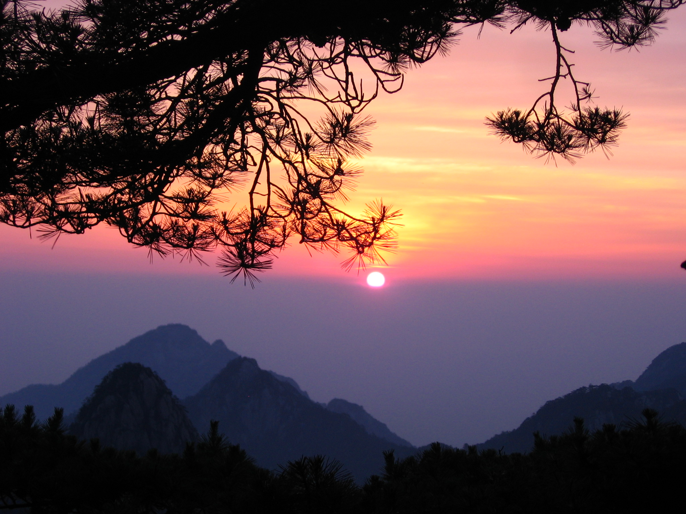

China in Autumn
Shanghai · Hangzhou · Wuzhen · Huangshan · Hongcun
A clean, focused luxury journey through Eastern China—built around autumn scenery, cultural depth, regional food, and comfortable pacing.
One clean site, one itinerary, one image strategy
Version 12 was created from an empty folder. It contains no legacy destinations, no external image links, and no hidden fallback artwork. Every displayed photograph is a local file in this ZIP.
The journey at a glance
Shanghai
Real Shanghai photography will be added only when a local licensed file is available.
Shanghai
Modern China, classic neighborhoods, and a gentle first landingBegin with three unhurried nights near the Bund. The plan mixes old Shanghai, modern skyline views, excellent food, and enough flexibility to recover from the international flight.

Hangzhou
West Lake, tea culture, temples, and golden autumn colorHangzhou is the romantic center of the trip. West Lake, Lingyin Temple, and Longjing tea country create a slower, softer chapter after Shanghai.

Wuzhen
Canals, stone bridges, lanterns, and an overnight water-town experienceWuzhen is deliberately an overnight stop. The key experiences happen after day visitors leave: lantern-lit canals, reflections, quiet lanes, and a calmer morning.

Huangshan
Granite peaks, sunrise, clouds, and late-autumn mountain sceneryHuangshan is the scenic centerpiece. The route protects time for weather changes, a cable-car ascent, a mountain overnight, sunset, and an optional sunrise.

Hongcun
Reflection ponds, white walls, black roofs, and slow village explorationHongcun is the human-scale cultural counterpoint to Huangshan. The visit is intentionally slow, centered on ponds, lanes, architecture, tea, and photography.